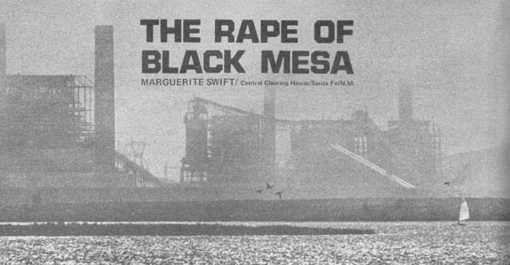
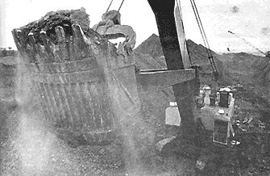

Soft blue smoke rises from a Navajo sheep camp as the sun spreads a gold-red glow across this treeless, arroyo-cut land of tumbleweed and sage. Shiprock-home of ancient monsters-lies to the west. The monsters are not all dead: Over a hill to the east, great columns of smoke belch-seemingly-from the heart of the earth. The sky turns black and a heavy cloud of poisoned air hangs over the land of the Navajo.
The old ones remember when they could see the sacred mountains of the north-snowcapped, in Colorado-every day. They remember, too, when water ran pure in the San Juan River and the land was free and beautiful. Today the water is contaminated by industrial waste and the land is scarred by transmission lines.
The southwest, where the Spanish first wrought ecological havoc with the introduction of sheep, is again invaded. This time, big-city utility companies-seeking fresh and far-away fuel sources-are hastening the destruction of land, air, water and the culture of the people who have inhabited this area for millenniums.
The clean air and water, once the primary economic asset of the southwestern states, is becoming a dwindling resource thanks largely to two coal-fired power plants now in operation. One-the Four Corners generating station near Farmington, N.M.-spews out more particulate matter from its stacks (320 tons daily) than all the polluters of New York and Los Angeles combined. It's the single largest source of pollution in the southwest and one satellite photograph shows a plume from the plant covering 10,000 square miles. There is no excuse for this: The operators of the station, Arizona Public Service Co., failed to purchase and install the pollution control equipment required by the contract.
Particulate matter is only the visual aspect of air pollution. Coal-fired power plants also emit oxides of nitrogen and sulfur-invisible, but more serious-that cause damage to plant, animal and human life. The Mohave power plant, the second major generating station in the southwest, burns low-grade Black Mesa coal and is estimated to produce 65 times as much sulfur dioxide and 86 times more nitrogen dioxide than permitted by the Los Angeles Air Pollution Control District.
And the worst is yet to come. The Four Corners and Mohave plants are only the first two of six major coal-fired electrical generating stations-Four Corners, Mohave, Page, Huntington Canyon, Kaiparowits and San Juan-planned by Western Energy Supply and Transmission, a 23-company utility consortium. WEST also expects to establish many smaller power plants throughout the region. The southwest is to be covered by a cloud of noxious gases.
The area containing the Grand Canyon, Lake Powell, Monument Valley, Rainbow Bridge, Bryce Canyon, Lake Mead, Mesa Verde-the home of the traditional Indians and of Spanish-American villagers along the Rio Grande and Colorado Rivers-is to be expended to the demands of city dwellers for more electricity.
The relationship of these cities to the generating stations is similar to the relationship a "mother country" projects upon a colony: A dependence, need and demand for raw materials with little regard for the social, human and environmental consequences involved. A home-owner in Los Angeles, operating an electric toothbrush, now influences the life of a Navajo shepherd on Black Mesa or a Hopi religious chief in the windswept village of Oraibi.
The power plants will have a generating capacity of 36 million kilowatts by 1985 and produce three times as much power as the Tennessee Valley Authority, 17 times more than the Aswan Dam. Under existing air pollution standards, none of these coal-burning plants would be allowed to operate in the Los Angeles basin. They have been placed in the southwest because of almost non-existant pollution laws and the availability of fuel and cooling water.
That water is very important. Coal-fired power plants already consume a tremendous amount of cooling water-up to 370,000 acrefeet a year-and return a highly saline discharge to the Colorado River watershed. The concentration of salts and dissolved solids will be intensified as the power-generating net is expanded and farmers in the Imperial and Mexicali Valleys, already suffering from saline water, will further feel the results of the power plant complex.
A massive state development plan, the Central Arizona Project (CAP), portrays the inter-relatedness of the southwest crisis. CAP calls for millions of acre-feet of water to be pumped to the expanding economies of Phoenix and Tucson. Electricity for the project will be produced at the Mohave and Page generating stations and water will be taken from the already over-allocated Colorado River.
The Navajo tribe, by virtue of the treaty of 1868, holds historic claim to all the water in the Colorado but-through government and industrial pressure-has been persuaded to waive these rights. Today, the Navajos have an insufficient amount of water (12,900 acre-feet) available for reservation use and CAP will make it increasingly difficult for Indian tribes to receive and utilize their full entitlement of water.
Power plants, transmission lines and cooling ponds will scar the land . . . but far more disruptive will be the strip mines that supply the plants' enormous appetite for coal. Except for Mohave and Page, the generating stations are located near abundant coal resources and the Four Corners mine-operated by Utah Mining and Construction-will be the largest open pit mine in the nation by late 1971. It will produce eight and onehalf million tons of coal annually.
The Mohave and Page plants will be fueled by coal from a more distant source: Black Mesa, a high plateau in the center of Navajo and Hopi lands in northeastern Arizona. Leases were signed between Peabody Coal and the Navajo and Hopi tribal councils "without adequate deliberation," according to Navajo Council member Keith Smith. "We were asked, in effect, to say yes or no to the proposal."
Sixty four thousand acres have been leased by the mining company. Fourteen thousand of these acres will be stripmined, tearing up Anazazi ruins, forcing families to move, destroying graves and grazing areas. Huge roads have been cut across the mesa, filling washes and causing all manner of drainage clogging and destruction. A railroad from the foot of Black Mesa will carve a large right-of-way through unspoiled northern Arizona to transport coal to the generating plant at Page, 78 miles away.
The mine, roads and railroad will take much from the natural beauty of the land and return only a few jobs of short duration. The air and water pollution yet to be generated by the power plants damns the project even more and another water problem generated by the Black Mesa scheme may turn the entire surrounding area into a near desert. Pumping 2,770 gallons of water a day from Black Mesa wells, to operate the 273-mile long pipeline (which slurries a mixture of pulverized coal and water to the plant at Mohave), could lower the local water table and cause natural wells and springs to go dry.
Perhaps the most disasterous of the human consequences associated with the power plants will be the desecration of Black Mesa. Black Mesa is a religious shrine-the Female Mountain of the Navajo, the eagle-hunting grounds, of the Hopi-and strip-mining this land is sacrilege.
Thus America is faced with losing the southwest-to smog, water pollution, land devastation and cultural disintegration to provide more electricity for the overcrowded cities of a selfdestructing economic system.
There are alternative means of generating power-nuclear, geothermal, waste plants-but to produce more electricity to meet increased demand is not the solution. There must occur, beginning immediately, a reduction in the per-capita consumption of power. We must learn to live without electric can openers, toothbrushes, two TV sets. We cannot forsake our one earth and expend its lifesupporting capacities for the minor conveniences of superabundant power. We MUST learn to use less electricity.
|
 |
 |
|